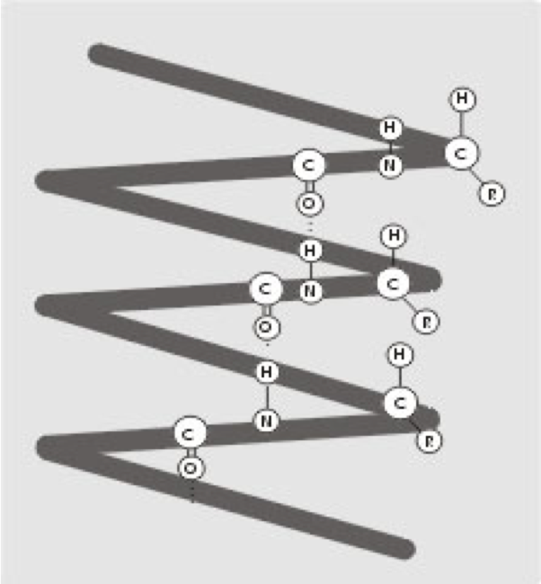

Белки и аминокислоты
Теория. Белки
Белки – это высокомолекулярные органические соединения,представляющие собой
биополимер,
состоящий из мономеров,
которыми являются аминокислоты соединенные пептидной связью.
Белок – это мышцы, соединительные ткани (сухожилия, связки, хрящи). Белковые молекулы включены в
состав костной ткани.
Из особых форм белка сотканы волосы, ногти, зубы, кожный покров.
Из белковых молекул образуются отдельные очень важные гормоны, от которых зависит здоровье.
Большинство ферментов также включают белковые фрагменты, а от ферментов зависит качество и
интенсивность происходящих в организме физиологических и биохимических процессов.
Содержание белков в различных тканях человека неодинаково. Так, мышцы содержат до 80% белка,
селезенка, кровь, легкие – 72%, кожа – 63%, печень – 57%, мозг – 15%, жировая ткань, костная и ткань
зубов – 14–28%.
Белки - это высокомолекулярные азотсодержащие органические вещества, структурным компонентом которых
являются α-аминокислоты, связанные пептидными связями.
В состав белков входит 20 различных аминокислот.
Кроме понятия «белок», в химии встречается термины «ПЕПТИД» и «ПОЛИПЕПТИД».
Белки подразделяют на протеины (простые белки) и протеиды (сложные белки).
Основными структурными компонентами белков являются аминокислоты.
Теория. Аминокислоты
Аминокислоты – производные карбоновых кислот, которые можно рассматривать как продукты замещения
одного или более атомов водорода в их радикалах на одну или более аминогрупп.
Органические соединения, в молекулах которых содержатся карбоксильная группа СООН и аминогруппа NH2,
связанные углеводородным радикалом R.
Аминокислоты – гетерофункциональные(бифункциональные) соединения, которые обязательно содержат две
функциональные группы: аминогруппу – NH2 и карбоксильную группу –COOH, связанные с углеводородным
радикалом.
Общая формула аминокислот:
СnH
2n
O2N
Аминокислоты могут реагировать друг с другом: карбоксильная группа одной аминокислоты реагирует с
аминогруппой другой аминокислоты с образованием пептидной связи и молекулы воды.
NH2 – CH2 – COOH + NH2 – CH2 – COOH =
NH2 – CH2 – CO – NH – CH2 – COOH + H2O
Связь – CO – NH – , соединяющая отдельные аминокислоты в пептид, называется пептидной.
Больше информации по данной теме содержится в
учебнике
Функции и значение белков
- Строительная – белки участвуют в образовании оболочки клетки, органоидов и мембран клетки.
Из белков построены кровеносные сосуды, сухожилия, волосы
- Каталитическая – все клеточные катализаторы –
белки (активные центры фермента).
- Двигательная – сократительные белки вызывают
всякое движение.
- Транспортная – белок крови гемоглобин присоединяет кислород и разносит его по всем тканям.
- Защитная – выработка белковых тел и антител для обезвреживания чужеродных веществ.
- Энергетическая – 1 г белка эквивалентен 17,6 кДж.
- Рецепторная – реакция на внешний раздражитель.
Отдельные белки находят применение в народном хозяйстве, например белки шерсти, шелка, кожи и рогов
животных.
Выяснение структуры белков, их многообразных функций в организме позволяет понять механизм
наследственности, что в свою очередь, имеет большое значение для выведения высокопродуктивных пород
животных и сортов растений.
Изучение белков важно и для выяснения природы заболеваний, наблюдаемых у человека и животных
Структура белков
-
Первичная структура - последовательность
чередования аминокислотных остатков
( связи пептидные )
( линейная цепь)
-
Вторичная структура – форма полипептидной цепи в пространстве. Белковая цепь закручена в
спираль (за счет множества водородных связей)
(спираль)

-
Третичная структура – реальная трехмерная конфигурация, которую принимает в пространстве
закрученная спираль (за счет гидрофобных связей), у некоторых белков – S–S-связи
(бисульфидные связи)
(клубок)
-
Четвертичная структура – соединенные друг с другом макромолекулы белков образуют комплекс.
(Несколько цепей)
Видео
Анилин. Его свойства и применение.
Белки- из чего состоит все живое на Земле
Практика
- Какие атомы входят в состав белков?
- Какой ученый и как объяснил строение белков?
- Определение белков.
- Как подразделяются белки?
- Какие структуры может иметь белок,как можно охарактеризовать каждую структуру, тип связи в
каждой структуре.
- Функции белков.
- Химические свойства белков
- Значение белков.
Лабораторная работа
Глава 10. §36Амины (стр.150-153). §37-38 Белки
(стр.406-422).
Ключевые слова:аланин, амин, аминокислота, анилин, белок,
диметиламин, производное аммиака, метиламин, триметиламин, этиламин, пропиламин, глицин,
пептидная связь.
ЗАДАЧИ И УПРАЖНЕНИЯ:
- Продолжите определение:Аминами называют органические производные аммиака, в
которых
…………………………………………………………………………………………………………………………………………………………………………………………………………
Приведите примеры различных типов аминов и назовите их:
Первичный амин
|
Вторичный амин
|
Третичный амин
|
Ароматические амин |
|
|
|
|
- Какое из утверждений правильное?
a) Амины, в которых аминогруппа связана непосредственно с
ароматическим кольцом, называют ароматическими.
b) Амины, содержащие в своем составе ароматическое кольцо, называют
ароматическими.
Ответ: ………………………………………………………………………………………
- Продолжите определения: Аминокислоты – это …………………………………………………………………………………………………………………………………………………………………………………………………………………..
Пептиды – это
……………………………………………………………………………………………………………………………………………………………………………………………………………………
Белками называют природные полимеры, состоящие
……………………………………………………………………………………………………………………………………………………………………………………………………………………
- Напишите реакции аминоуксусной кислоты с NaOH, HCl, H2SO4
1) …………………………………………………………………………………………..
2) ………………………………………………………………………………………….
3) ………………………………………………………………………………………….
- Напишите уравнение реакции образования трипептида из глицина,
аланина и фенилаланина.
…………………………………………………………………………………………………………………………………………………………........................................................................................
- В каких соединениях присутствует пептидная связь: а) глюкоза; б) спирт; в) глицерин; г)
крахмал; д) белок; е) дипептид?
Ответ: ………………………………………………………………………………………..
- При каких условиях происходит коагуляция белка?
Условия
|
Встряхивание |
Нагревание |
Рентгеновское облучение |
УФ освещение |
|
|
|
|
- Аспартам (код Е951) – заменитель сахара, который широко
используется в пищевой промышленности для подслащивания напитков, жевательной резинки и
зубной пасты. По химическому строению аспартам – дипептид. Напишите реакцию гидролиза
аспартама:
………………………………………………………………………………………………………………………………………………………………………………………………………………………………………………………………………………………………………………………………
ТЕМА: "Физические и химические свойства белков "
ЦЕЛЬ:
- Повторить технику безопасности при работе с химическими реактивами.
- Научиться доказывать наличие белка в пищевых продуктах .
- Уметь объяснять цветные реакции белка с химической точки зрения.
МЕХАНИЗМЫ ДЕНАТУРАЦИИ
- Практически любое заметное изменение внешних условий, например, нагревание
или существенное изменение pHприводит к последовательному
нарушению четвертичной, третичной и вторичной структур белка. Обычно денатурация вызывается
повышением температуры, действием сильных кислот и щелочей, солей тяжёлых металлов,
некоторых растворителей (спирт), радиации и др.
- Денатурация часто приводит к тому, что в коллоидном растворе белковых
молекул происходит процесс агрегации частиц белка в более крупные. Визуально это выглядит,
например, как образование «белка» при жарке яиц.
- Ренатурация — процесс, обратный
денатурации, при котором белки возвращают свою природную структуру. Нужно отметить, что не
все белки способны ренатурировать; у большинства белков денатурация необратима.
- Группа австралийских и американских химиков нашла способ (с
помощью использования мочевины и центрифугирования) за 20 минут минутренатурировать варенное
куриное яйцо.
ОПЫТ №1. Осаждение белков спиртом
Органические растворители вызывают осаждение белков вследствие
разрушения(денатурации) гидратной(водной) оболочки макромолекул.
- В пробирку налейте 1 см3 раствора яичного белка с добавлением хлорида натрия.
- По каплям прилейте 4 – 6 см3 спирта и сильно взболтайте. Через 5
– 8 мин выпадает осадок белков. Почему?
..............................................................................................................................................................................................................................................................................................................................................
ОПЫТ №2. Биуретовая реакция
Налейте в пробирку 2-3мл раствора белка и добавьте несколько миллилитров гидроксида натрия, а затем немного раствора сульфата меди.
ОПЫТ №3.Ксантопротеиновая реакция.
В пробирку налейте 2-3 мл раствора белка и добавьте 0,5-1мл концентрированной
азотной кислоты. (Осторожно!).
Задания для самостоятельных выводов.
- Как можно доказать наличие белков в пищевых продуктах?
- Какова сущность цветных реакций белков?
............................................................................................................................................................................................................................................................................................................................................................................................................................................................................................................................................................................................................................................................................................
- Опишите физические свойства белков.
...................................................................................................................................................................................................................................................................................................................................................................................................................................................................................................................................................................................................................................................................................................................................................................................................................................................................
- Где белки встречаются в природе и каково их значение.
..................................................................................................................................................................................................................................................................................................................................................................................................................................................................................................................................................................................................................................................................................................................................................................................................................................................................
ОФОРМЛЕНИЕ ОТЧЕТА
Название реакции |
Признак реакции |
Обоснование (какие группы, ионы, задействованы)
|
Ксантопротеиновая |
|
|
Биуретовая |
|
|
Действие ацетата свинца |
|
|
Денатурация |
|
|
Исходя из проделанных опытов оформите таблицу
ОТВЕТЬТЕ НА ВОПРОСЫ:
- Почему врачи-косметологи рекомендуют при выпадении волос принимать внутрь
очищенную серу?Какие химические связи разрываются в секущихся волосах?
- В каком органе больше а каком меньше всего
белка?
- Назовите реакцию получения белка?
- С помощью, каких связей удерживается вторичная структура белка?
- Назовите белок крови?
- Назовите два белка содержащиеся в мышце?
- В каком продукте содержится больше всего белка?
- Сколько содержат аминокислот истинные белки?
- Какие белки образуют коллоидные растворы, или золи?
- Какой белок был первым синтезированы искусственно